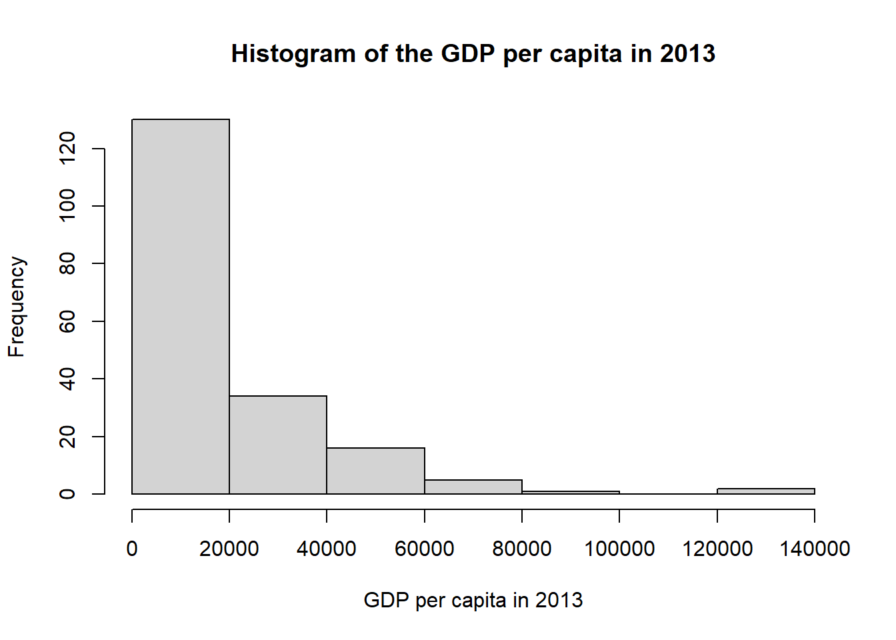

Lab 1 - Introduction to statistics in R and histograms
What you will learn during this exercise:
- Get to know the user interface in SPSS
- Understand what is data table and what is unit and variable
- Be able to sort values into a variable to identify units with min and max values
- Be able to create frequency histograms and understand them
- Be able to construct a change variable
1 Grading
A maximum of 3 pages of PDF on BlackBoard within the deadline. Put your last name in the file name. Make sure you have a clear layout. Use only one language - either Norwegian or English in the answer. NB Failure to do so will count negatively in evaluation.
Questions asked in the exercise text may be repeated in a test. Write down answers to these and be sure to answer the corresponding test (Test 1 in LM1) before the deadline.
The results of the exercise and the test will count towards the final exam (in total folder teaching will count 40% of the exam grade).
2 Preliminary steps
1- Create a folder on your home directory (go to ‘my computer’ and click into your ‘Home directory (M :)’) which you call, for example, Geog1004 Exercises. You may want to have individual subfolders - one for each exercise such as: M: Geog2015 exercises OV1
2- Download the World_90_13.xlsx file from Exercise 1 into LM1 on the BlackBoard and save it to Exercise 1 folder that you created in a).
3- Open R.
4- Load the World_90_13.xlsx dataset in R (as you learnt during the tutorials)
library(xlsx)
data <- read.xlsx('data/World_90_13.xlsx', sheetIndex = 1)3 Get to know the R interface
- Remember the tutorials and answer the following question: what are the main panes in RStudio, what are their functions?
If you need some refreshment watch this video
4 Get to know the data
The data presented is taken from the World Bank’s development indicators web pages and contains information on life expectancy, annual population growth and purchasing power adjusted gross domestic product per capita for 1990 and 2013 respectively.
head(data) # Show the 5 first rows## NA. CntryName CntryCode LifeExp90 LifeExp13 PopGrowth90
## 1 1 Afghanistan AFG 48.56705 60.93141 3.879694
## 2 2 Albania ALB 71.95732 77.53724 1.799086
## 3 3 Algeria DZA 66.75117 71.00966 2.559032
## 4 4 American Samoa ASM NA NA 3.137301
## 5 5 Andorra ADO NA NA 3.856125
## 6 6 Angola AGO 41.13834 51.86617 2.796482
## PopGrowth13 GDP_PPP90 GDP_PPP13
## 1 3.1643363 NA 1876.191
## 2 -0.1077295 4303.374 9910.841
## 3 1.9748145 10289.019 13300.682
## 4 0.1357110 NA NA
## 5 -4.3996839 NA NA
## 6 3.3062046 NA NAYou can also visualize the entire dataset by clicking on the dataset name in your Environment. This will give you the result shown below:
knitr::include_graphics('imgs_lab/lab_1/dataview.PNG')
You can also learn about the type of variable (numeric, date, factor …) in your dataset using str():
str(data)## 'data.frame': 219 obs. of 9 variables:
## $ NA. : Factor w/ 219 levels "1","10","100",..: 1 112 143 154 165 176 187 198 209 2 ...
## $ CntryName : Factor w/ 215 levels " ",..: 2 3 4 5 6 7 8 9 10 11 ...
## $ CntryCode : Factor w/ 215 levels " ","ABW","ADO",..: 4 6 56 10 3 5 11 8 9 2 ...
## $ LifeExp90 : num 48.6 72 66.8 NA NA ...
## $ LifeExp13 : num 60.9 77.5 71 NA NA ...
## $ PopGrowth90: num 3.88 1.8 2.56 3.14 3.86 ...
## $ PopGrowth13: num 3.164 -0.108 1.975 0.136 -4.4 ...
## $ GDP_PPP90 : num NA 4303 10289 NA NA ...
## $ GDP_PPP13 : num 1876 9911 13301 NA NA ...
- How many variables do you have in your dataset? How many rows?
5 Create a histogram
In R, constructing a histogram or other graph is generally very easy. You have 2 options for this:
- You can use the base function
hist() - You can use the package
ggplot2which enhance significatively the aesthetic of your graph.
Because ggplot2 is more complex we will stick to the base graphics. Nevertheless if you are curious about using ggplot2 to produce high quality graph I recommend you to read this website.
Here, we will draw a histogram of gross national product per capita in 2013.
hist(data$GDP_PPP13)You can modify the graph to give a more relevant title and axis names:
hist(data$GDP_PPP13,
main = 'Histogram of the GDP per capita in 2013',
xlab = 'GDP per capita in 2013',
ylab = 'Frequency')
You can also add colors, change the size of the bins … I let you discover the possibilities by typing ?hist.
- Repeat the procedure with the variable: Population growth 2013 (annual%). Bonus: Add a color to the bars in the histogram
6 Create new variables for changes in gross domestic product, population growth and life expectancy
In step 4, we have given a static representation of the distribution for the variables gross national product and population growth for 2013.
We now want to look at the changes between 1990 and 2013 in the individual countries for these two variables. We also want to do the same for the variable life expectancy. We must therefore construct three new variables representing these changes.
To add the new variable in the dataset you can do as follow:
# Create a new column "changes_GDP" representing the difference between GDP in 2013 an GDP in 1990.
data$changes_GDP <- data$GDP_PPP13 - data$GDP_PPP90We can check that the new variables has been created by for instance typing str(data)
str(data)## 'data.frame': 219 obs. of 10 variables:
## $ NA. : Factor w/ 219 levels "1","10","100",..: 1 112 143 154 165 176 187 198 209 2 ...
## $ CntryName : Factor w/ 215 levels " ",..: 2 3 4 5 6 7 8 9 10 11 ...
## $ CntryCode : Factor w/ 215 levels " ","ABW","ADO",..: 4 6 56 10 3 5 11 8 9 2 ...
## $ LifeExp90 : num 48.6 72 66.8 NA NA ...
## $ LifeExp13 : num 60.9 77.5 71 NA NA ...
## $ PopGrowth90: num 3.88 1.8 2.56 3.14 3.86 ...
## $ PopGrowth13: num 3.164 -0.108 1.975 0.136 -4.4 ...
## $ GDP_PPP90 : num NA 4303 10289 NA NA ...
## $ GDP_PPP13 : num 1876 9911 13301 NA NA ...
## $ changes_GDP: num NA 5607 3012 NA NA ...
- Add variables representing the changes in population growth and life expectancy.
Note 1: The variable you have constructed is not change in population, but change in population growth. A country that had population growth in 1990 and also had population growth, but somewhat lower, in 2013 will have a negative value for the change variable. Although the country is experiencing growth in both years, growth has slowed. A country that has received a positive value means that population growth in 2013 was greater than population growth in 1990
Note 2: Note: The gross domestic product variables are adjusted in two ways. First, one it adjusted with regard to purchasing power. With a 1 dollar spent in India you can buy much more than with a 1 dollar spent in the United States (Check wikipedia). Secundly, the variable has been adjusted to dollar value as it was in 2011 (since 1 dollar in 1990 is different than a dollar in 2013).
*Note 3: If one of the variables used to calculate the change variable is missing value for a country, the change variable will also be missing value for that country. Both variables used in the calculation must have value for the change variable to get value.
7 Create frequency histograms of the new change variables and discuss the results
Create a histograms for your three new change variables as described in point 4. Study the data table and frequency histograms you have created and discuss with a fellow student:
- The variable values are displayed along the first axis (the x-axis, the horizontal). Along the second axis (the y-axis, the vertical), frequency is shown, but frequency of what?
- Which countries represent the extremes of change in population growth, life expectancy and gross domestic product?
*Tip: you can use which(max(data$...)) and which(min(data$...)). This will give you the row number of the maximum and minimum of your variable. You can then search for the corresponding country.
- Has population growth increased or decreased for most countries between 1990 and 2013?
- Has life expectancy increased or decreased for most countries between 1990 and 2013?
- Have most countries become richer or poorer (have they increased or decreased their GDP per capita) in the period between 1990 and 2013?
- At what end of the GDP per capita change histogram are Botswana, Italy, Ireland and Saudi Arabia located? Where is find Norway (first quarter, first half …)?
Write down the answers - you may be asked the same questions on the exam test 1 that finishes LM 1.
8 Use hist() to create frequency histograms to be submitted for this exercise.
Create three histograms for the three change variables. Label the axis with relevant title and add colors to the histogram.
You should end up with 3 histograms.
9 Save your histograms and place them in a word document ready for submission.
To save a graph you will need to select Plots on the lower right pane. Then select Export > Save as image.
knitr::include_graphics('imgs_lab/lab_1/SaveImg.PNG')Note: If you use Norwegian in the exercise, remember to change all text in the figures to Norwegian.
10 Submission
As a hand in exercise 1 you must deliver:
- The three frequency charts for the change variables (from point 5) that you created in point 7.
- A text explaining briefly what frequency charts are for something and why it is useful to create such charts. Use your own words! (The answers will be checked for plagiarism)
Provide brief, descriptive character texts for each chart. Put them under the figure.
- What type of chart does the figure show?
- What variables are used?
- For what years?
Remember to be brief! Make sure that figure text and figure are on the same page. Remember that the answer must be a maximum of three pages long. Remember to convert the Word file to .pdf after you finish. To convert the file to PDF format, go to File and Save as Adobe PDF.
11 Checklist
The submission must contain:
- The three frequency histograms of the change variables you created.
- Short and descriptive character texts under each of the frequency histograms.
- A brief explanation of your own words about what a frequency histogram is and why it is useful to create such charts.
Now you are ready to submit your exercise: Upload the (max) 3-page PDF file on BlackBoard as a response to this exercise.
REMEMBER to include your last name in the file name and use only one language in the answer.
12 Prepare for the test
Make sure you are ready with the answers to the questions in steps 3, 4 and 6. These questions will be repeated in the test that completes Learning Module 1 (LM1).